pacman::p_load(tidyverse, ggridges, ggdist, ggthemes, colorspace, ggstatsplot, ungeviz, crosstalk, plotly, DT, gganimate)Visual Statistical Analysis

1. Learning Objectives
New statistical graphic methods for visualising distribution, namely ridgeline plot and raincloud plot by using
ggplot2and its extensions.Create visual graphics with rich statistical information using
ggstatsplotpackageVisualise uncertainty using
ungevizpackage
2. Load Packages
tidyverseis a family of R packages designed to support data science, analysis and communication task including creating static statistical graphsggridgesis an ggplot2 extension specially designed for plotting ridgeline plotsggdistis an ggplot2 extension for visualising distribution and uncertaintyggstatsplotis an ggplot2 extension for creating graphics with details from statistical testsungevizvisualises uncertaintycrosstalkputs HTML elements side by sidecolourspace,ggthemesandplotlycreates customized interactive plots.
3. Import Data
exam_data is a year end examination grades of a cohort of Primary 3 students from a local school.
exam_data <- read.csv("data/Exam_data.csv")
glimpse(exam_data)Rows: 322
Columns: 7
$ ID <chr> "Student321", "Student305", "Student289", "Student227", "Stude…
$ CLASS <chr> "3I", "3I", "3H", "3F", "3I", "3I", "3I", "3I", "3I", "3H", "3…
$ GENDER <chr> "Male", "Female", "Male", "Male", "Male", "Female", "Male", "M…
$ RACE <chr> "Malay", "Malay", "Chinese", "Chinese", "Malay", "Malay", "Chi…
$ ENGLISH <int> 21, 24, 26, 27, 27, 31, 31, 31, 33, 34, 34, 36, 36, 36, 37, 38…
$ MATHS <int> 9, 22, 16, 77, 11, 16, 21, 18, 19, 49, 39, 35, 23, 36, 49, 30,…
$ SCIENCE <int> 15, 16, 16, 31, 25, 16, 25, 27, 15, 37, 42, 22, 32, 36, 35, 45…4. Ridgeline Plot
A Ridgeline plot (or Joyplot) shows the distribution of a numeric value for several groups/variables. Distribution can be represented using histograms or density plots, all aligned to the same horizontal scale and presented with a slight overlap.
Ridgeline plots are useful to represent medium to high groups (above 6), and overlapping groups use space more efficiently. Where there is less than 6 groups, distribution plots are better, namely violin, density, histogram and boxplot.
Ridgeline plots works well with clear patterns or ranking in the data. Otherwise group will tend to overlap each other, leading to a messy plot not providing any insight.
ggridges package provides two main geom to plot gridgeline plots:
geom_ridgeline()takes height values directly to draw the ridgelines. The minimum argument requirements are x, y and height.geom_density_ridges()estimates data densities and then draws those using ridgelines. The minimum argument requirements are x and y. Not recommended for interactivity as calculated values will cause confusion.
The geom_density_ridges() calculates density estimates from the data and then plots those, using the ridgeline visualization. The height aesthetic does not need to be specified in this case.
Trailing tails can be cut off using the rel_min_height aesthetic. This aesthetic sets a percent cutoff relative to the highest point of any of the density curves. A value of 0.01 usually works well, but you may have to modify this parameter for different datasets.
The extent to which the different densities overlap can be controlled with the scale parameter. A setting of scale = 1 means the tallest density curve just touches the baseline of the next higher one. Smaller values create a separation between the curves, and larger values create more overlap.
ggplot(exam_data,
aes(x = ENGLISH, y = CLASS)) +
geom_density_ridges(scale = 3,
alpha = 0.3,
rel_min_height = 0.01,
scale = 1,
bandwidth = 3.4,
aes(fill = CLASS))+
scale_x_continuous(name = "English Scores",
expand = c(0, 0))+
scale_y_discrete(name = NULL, expand = expansion(add = c(0.2,2.6)))+
theme_ridges()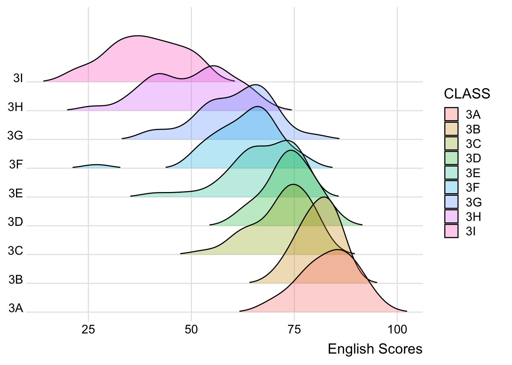
Note
3B students performs equally well and has less variability compared to 3A. The lowest performance in 3A and 3B are closely similar. 3H have two cohorts of performance as indicated by two peaks.
A ridgeline plot can also be created using a set of histograms using stat and bins aesthetics.
ggplot(exam_data,
aes(x = ENGLISH, y = CLASS, fill = CLASS))+
geom_density_ridges(scale = 2.5,
alpha = 0.3,
stat = "binline",
bins = 20,
rel_min_height = 0.01,
scale = 1,
bandwidth = 3.4,
aes(fill = CLASS))+
scale_x_continuous(name = "English Scores",
expand = c(0, 0))+
scale_y_discrete(name = NULL, expand = expansion(add = c(0.2,2.6)))+
theme_ridges()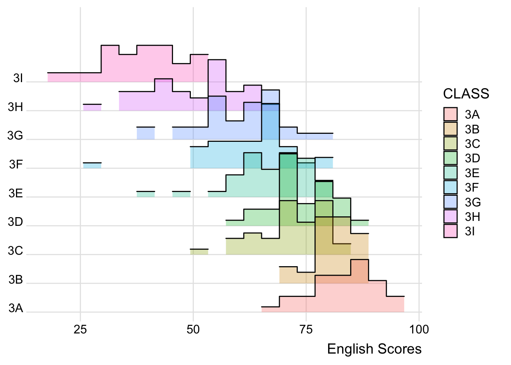
Instead of a single solid color, the area under a ridgeline can be filled with colors that vary in some form along the x axis using geom_ridgeline_gradient() or geom_density_ridges_gradient(). Both geoms work just like geom_ridgeline() and geom_density_ridges(), except that they allow for varying fill colors.
However, they do not allow for alpha transparency for technical reasons.
direction sets the order of colors in the scale. If 1, the default, colors are ordered from darkest to lightest. If -1, the order of colors is reversed.
option is a character string indicating the color map option to use. Eight options are available:
“magma” (or “A”) “inferno” (or “B”) “plasma” (or “C”) “viridis” (or “D”) “cividis” (or “E”) “rocket” (or “F”) “mako” (or “G”) “turbo” (or “H”)
ggplot(exam_data,
aes(x = ENGLISH, y = CLASS,
fill = stat(x)))+
geom_density_ridges_gradient(scale = 3,
bandwidth = 3.4,
rel_min_height = 0.01)+
scale_fill_viridis_c(name = "English Scores",
option = "D") +
scale_x_continuous(name = "English Scores",
expand = c(0, 0))+
scale_y_discrete(name = NULL, expand = expansion(add = c(0.2, 2.6)))+
theme_ridges()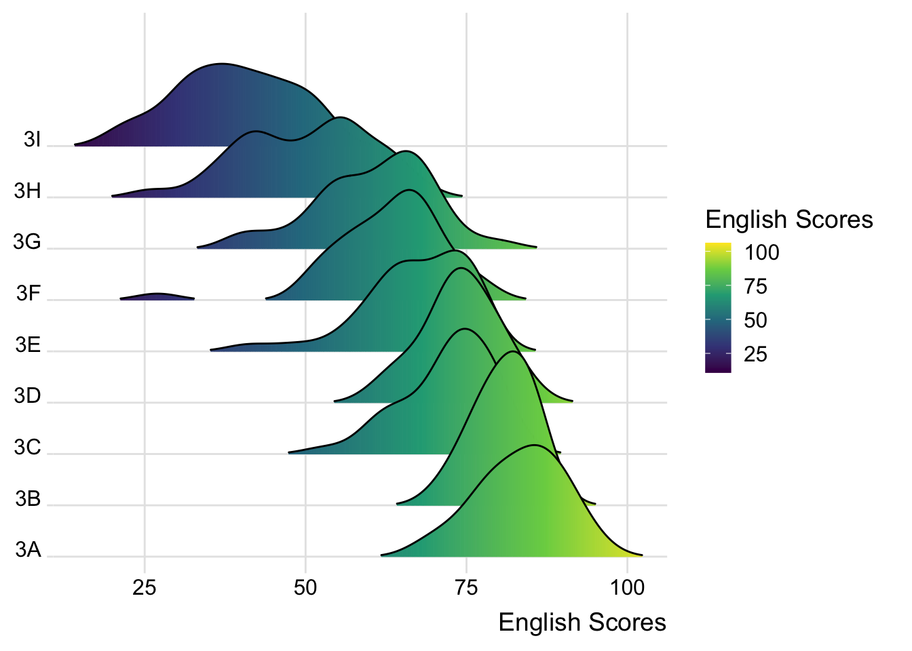
ggridges also provides a stat function, stat_density_ridges() to replace stat_density() of ggplot2, where calc_ecdf = TRUE.
The probabilities are calculated by using stat(ecdf) which represent the empirical cumulative density function for the distribution of English score.
ggplot(exam_data,
aes(x = ENGLISH, y = CLASS,
fill = 0.5 - abs(0.5-stat(ecdf))))+
stat_density_ridges(geom = "density_ridges_gradient",
calc_ecdf = TRUE,
scale = 2,
bandwidth = 3.4)+
scale_fill_viridis_c(name = "Tail probability",
direction = -1,
option = "A")+
theme_ridges()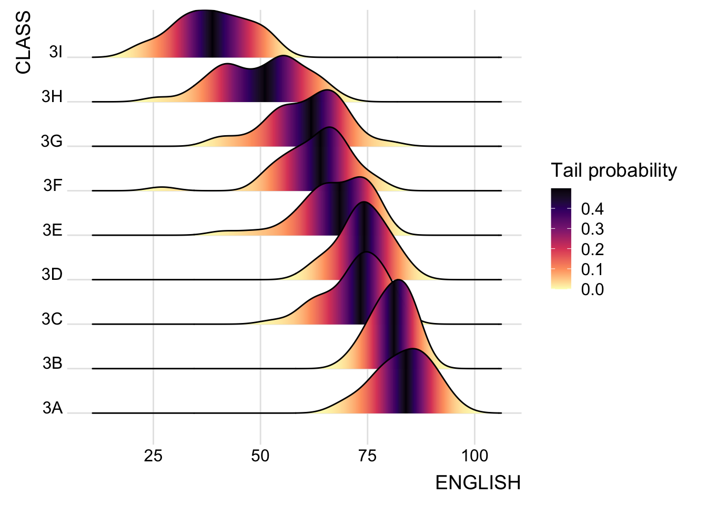
Note
The darkest colour is probability of 0.5 which indicates the score of most students. At probability 0.9, 3A has the highest score. At probability 0.1, 3A and 3B has similar performancs.
The ridgeline plot can be coloured by quantile using the calculated stat(quantile) aesthetic, where calc_ecdf = TRUE, quantiles = # and quantile_lines = TRUE.
ggplot(exam_data,
aes(x = ENGLISH, y = CLASS,
fill = factor(stat(quantile))))+
stat_density_ridges(geom = "density_ridges_gradient",
scale = 2,
bandwidth = 3.4,
calc_ecdf = TRUE,
quantiles = 5,
quantile_lines = TRUE)+
scale_fill_viridis_d(name = "Quartiles",
direction = -1,
option = "A")+
theme_ridges()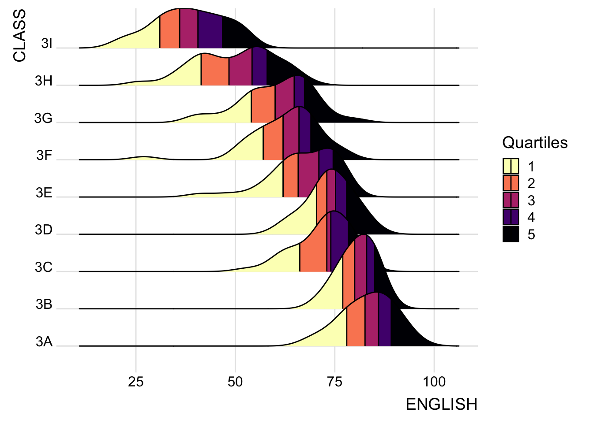
Instead of using number to define the quantiles, we can also specify quantiles by cut points such as 2.5% and 97.5% tails to colour the ridgeline plot.
ggplot(exam_data,
aes(x = ENGLISH, y = CLASS,
fill = factor(stat(quantile))))+
stat_density_ridges(geom = "density_ridges_gradient",
scale = 2,
bandwidth = 3.4,
calc_ecdf = TRUE,
quantiles = c(0.025, 0.975))+
scale_fill_manual(name = "Probability",
values = c("#FF0000A0", "#A0A0A0A0", "#0000FFA0"),
labels = c("(0, 0.025]", "(0.025, 0.975]", "(0.975, 1]"))+
theme_ridges()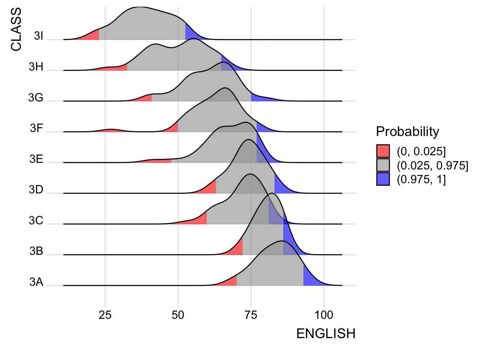
5. Raincloud Plot
The Raincloud Plot is a visualization that produces a half-density to a distribution plot. The density plot is in the shape of a raincloud and enhances the the box-plot by highlighting multiple modalities (an indicator that groups may exist).
The boxplot does not show where densities are clustered, but the raincloud plot does. Step 1: Plot a Half-Eye graph by using stat_halfeye() of ggdist package Step 2: Add the second geometry layer using geom_boxplot() of ggplot2 Step 3: Add the third geometry layer using stat_dots() of ggdist package Step 4: Flip the raincloud chart horizontally using coord_flip() of ggplot2 package
stat_halfeye() of ggdist package produces a Half Eye visualization, which is contains a half-density and a slab-interval.
The slab interval is removed by setting .width = 0 and point_colour = NA.
ggplot(exam_data,
aes(x = RACE, y = ENGLISH, fill = GENDER)) +
stat_halfeye(alpha = 0.5,
adjust = 0.5,
justification = -0.2,
.width = 0,
point_colour = NA)+
theme_minimal()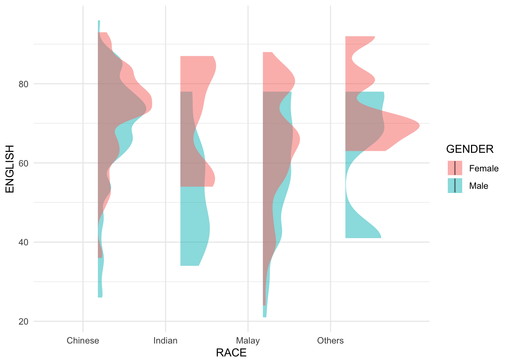
geom_boxplot() of ggplot2 produces a narrow boxplot. The width and opacity can be adjusted.
ggplot(exam_data,
aes(x = RACE, y = ENGLISH, fill = GENDER))+
stat_halfeye(alpha = 0.5,
adjust = 0.5,
justification = -0.2,
.width = 0,
point_colour = NA)+
geom_boxplot(width = .20,
outlier.shape = NA,
alpha = 0.8)+
theme_minimal()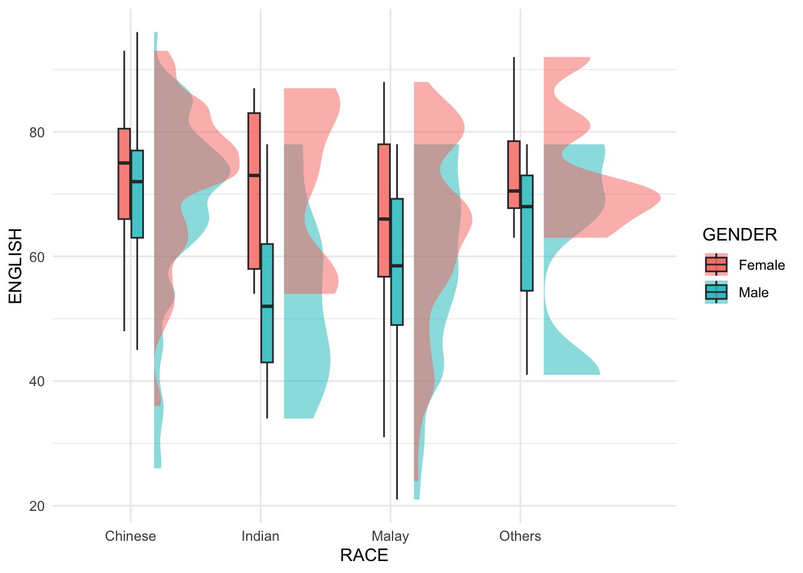
stat_dots() of ggdist package produces a half-dotplot, which is similar to a histogram. The number of dots that indicates the number of data points in each bin. Without the dot plot, the sample size is unknown using halfeye() and boxplot().
side = “left” indicates the position of dots on the left-hand side.
ggplot(exam_data,
aes(x = RACE, y = ENGLISH, fill = GENDER)) +
stat_halfeye(adjust = 0.5,
justification = -0.2,
.width = 0,
point_colour = NA,
alpha = 0.5) +
geom_boxplot(width = .20,
outlier.shape = NA,
alpha = 0.8) +
stat_dots(side = "left",
justification = 1.2,
binwidth = .5,
dotsize = 2)+
theme_minimal()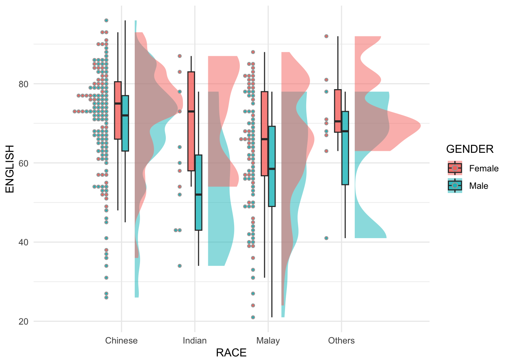
Note
With the dot plot, it is visually observable the Indian and Others are relatively small cohorts.
coord_flip() of ggplot2 package flips the raincloud chart horizontally to give it the raincloud appearance.
Optional: theme_economist() of ggthemes package is used to give the raincloud chart a professional publishing standard look.
ggplot(exam_data,
aes(x = RACE,
y = ENGLISH, fill = GENDER))+
stat_halfeye(alpha = 0.5,
adjust = 0.5,
justification = -0.2,
.width = 0,
point_colour = NA)+
geom_boxplot(alpha = 0.8,
width = .20,
outlier.shape = NA)+
stat_dots(side = "left",
justification = 1.2,
binwidth = .5,
dotsize = 1.5)+
coord_flip()+
theme_minimal()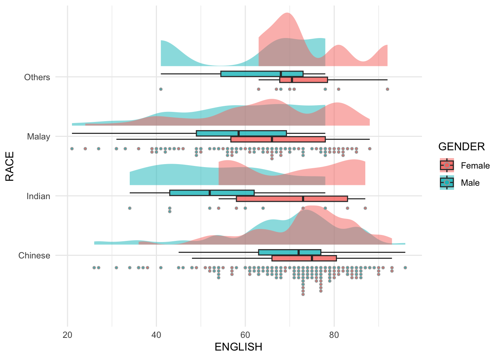
6. Statistical Tests
ggstatsplot is an extension of ggplot2 package for creating graphics with details from statistical tests to be included in the information-rich plots themselves.
Provide alternative statistical inference methods by default.
Follow best practices for statistical reporting. The default template abides by the APA gold standard for statistical reporting.
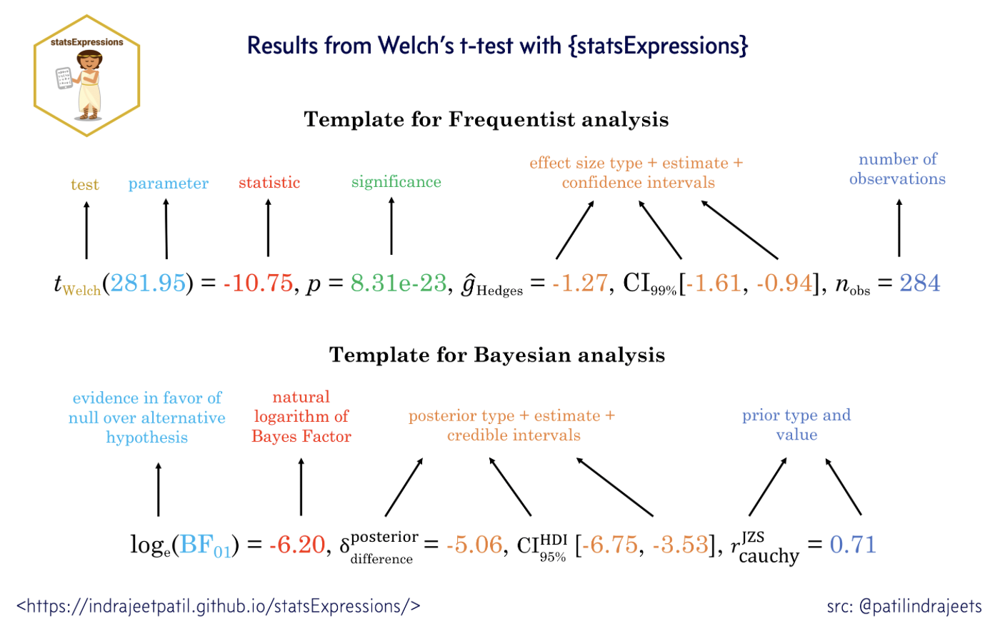
6.1 One-sample Test
gghistostats can be used for data exploration to inspect distribution of a continuous variable and to test if the mean of a sample variable is different from a specified value (population parameter).
Bayes factor
Bayes factor is the ratio of the likelihood of one particular hypothesis to the likelihood of another. It can be interpreted as a measure of the strength of evidence in favor of one theory among two competing theories. A Bayes Factor can be any positive number.
It gives us a way to evaluate the data in favor of a null hypothesis, and to use external information to do so. It tells us what the weight of the evidence is in favor of a given hypothesis.
When comparing two hypotheses, H1 (the alternate hypothesis) and H0 (the null hypothesis), the Bayes Factor is often written as B10.
gghistostats computed Bayes Factors to quantify the likelihood of the English Score (BF10) and the null hypothesis (BF01). In our example, the Bayes Factor value indicates these English scores are similar to the population mean generated from set.seed(1234). The log(Bayes factor) of 31.45 means the odds are low that this sample is different.
set.seed(1234)
gghistostats(data = exam_data,
x = ENGLISH,
type = "bayes",
test.value = 60,
xlab = "English Scores")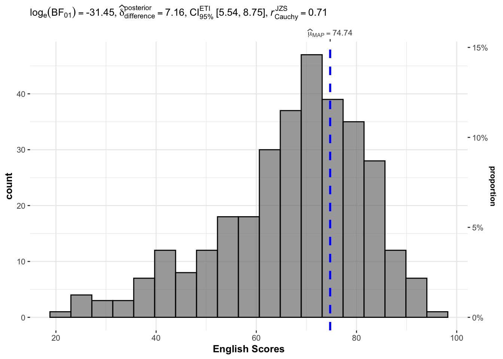
6.2 Two-sample mean test
ggbetweenstats() is used to build a visual for two-sample mean test of Maths scores by gender. By default, the statistical details, Bayes Factors, the number of observations, and its distribution summary are included in the plot.
ggbetweenstats(data = exam_data,
x = GENDER, y = MATHS,
type = "np",
messages = FALSE)
6.2 One-way ANOVA Test
ggbetweenstats() is used to build a visual for One-way ANOVA test on English score by race.
pairwise.display()
ggbetweenstats(data = exam_data,
x = RACE,
y = ENGLISH,
type = "p",
mean.ci = TRUE,
pairwise.comparisons = TRUE,
pairwise.display = "s",
p.adjust.method = "fdr",
messages = FALSE)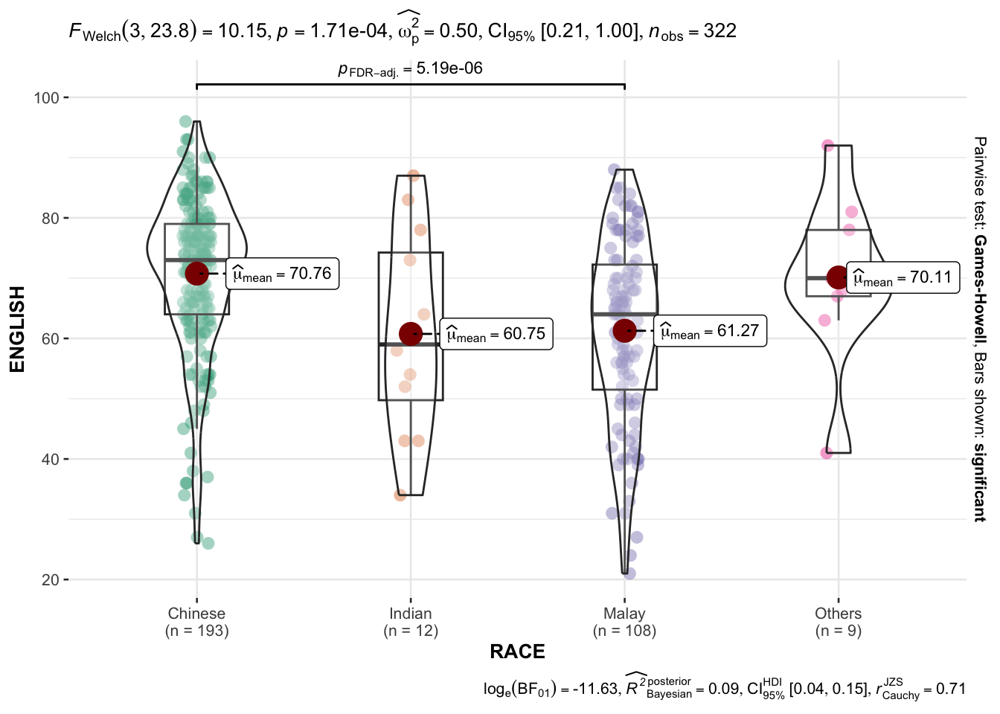
6.3 Significant Test of Correlation
ggscatterstats() is used to build a visual for Significant Test of Correlation between Maths scores and English scores.
ggscatterstats(data = exam_data,
x = MATHS,
y = ENGLISH,
marginal = FALSE)
6.4 Significant Test of Association
Maths scores is binned into a 4-class variable by using cut(). ggbarstats() is used to build a visual for Significant Test of Association
exam1 <- exam_data %>%
mutate(MATHS_bins = cut(MATHS, breaks = c(0,60,75,85,100)))
ggbarstats(exam1, x = MATHS_bins, y = GENDER)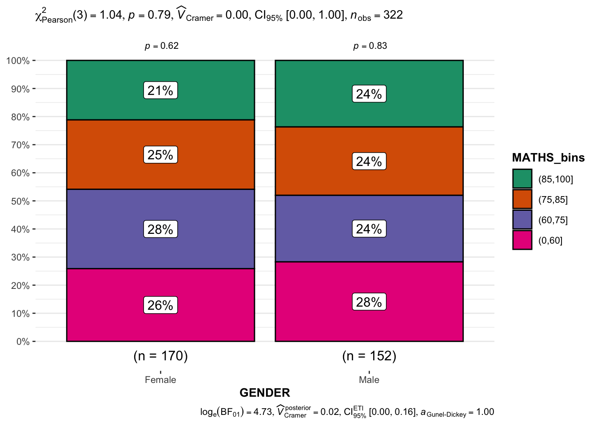
10. References
Ridgeline: https://www.data-to-viz.com/graph/ridgeline.html
Raincloud: https://rpubs.com/rana2hin/raincloud
ggstatsplot: https://indrajeetpatil.github.io/ggstatsplot/articles/ggstatsplot.html